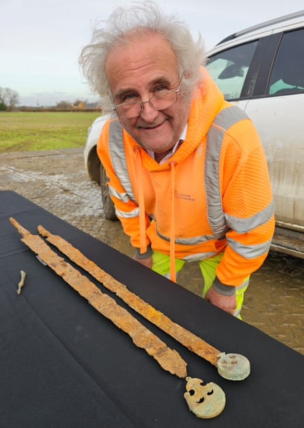
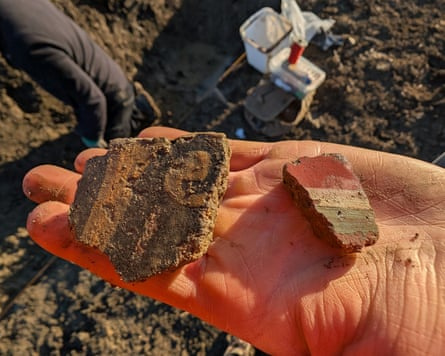
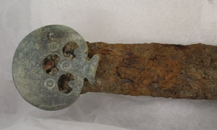

It began with an extraordinary piece of fortune: a metal detectorist on only his second expedition coming upon two very rare cavalry swords on the brink of being lost for ever.
A dig by professional archaeologists and volunteers at the spot in Gloucestershire has now found that the swords may have been buried in the grounds of a grand Roman villa built on the site of an iron age settlement.
The work has led to the hypothesis that the swords, which go on display at the Corinium Museum, in Cirencester, from 2 August, may have been hidden in a Roman courtyard or garden to stop them falling into the hands of the Saxons as they surged through the region.
Peter Busby, from Cotswold Archaeology, with the two Roman cavalry swords.Photograph: James Harris/PA
Peter Busby, a project officer for Cotswold Archaeology , compared the luck of finding the swords and the success of the dig to the “stars aligning”.
He said over the years many detectorists had combed the field near Willersey, close to the border of Gloucestershire and Worcestershire. They were found in 2023 about an inch below the surface.
Busby said the swords had been clipped by farm machinery so may have soon been destroyed had they not been discovered. “It was phenomenally lucky,” he said. “The swords were within half an inch, no more than an inch, of oblivion.”
The weapons were examined at Historic England’s science facility at Fort Cumberland, in Portsmouth. One has evidence of decorative pattern welding running down the centre whereas the other is plain. The pattern-welded sword would have been more expensive to produce and therefore of higher status.
It is believed the long swords or “spatha” were used by the Romans on horseback from the early second century to the third century AD.
Funded by Historic England and undertaken in partnership with Cotswold Archaeology, the dig took place in driving rain in January.
The team found Roman building materials including ceramic roofing, tiles that may have been part of an underfloor heating system, and fragments of painted wall plaster, suggesting a villa from the second or third century.
Fragments of painted wall plaster.Photograph: Historic England and Cotswold Archaeology
They also found evidence of settlements from hundreds of years before, as well as the remains of a person from the early to middle iron age (800-100BC) who was buried wearing an iron band on their upper right arm, and a horse skull in a nearby pit.
Busby said the work was gruelling but the brilliance of the discoveries kept everyone going. “This is the bee’s knees. It captured the imagination of the volunteers and professional archaeologists alike. Working on site on grim, dank, dark January days didn’t faze anybody because of the excitement.”
Once Historic England has the final report on the archaeological work, it will consider whether to recommend to the UK government that the site be protected as a scheduled monument.
More work will be needed to confirm the presence of the villa and to try to understand its links with the iron age settlement and why the swords ended up there.
The detectorist who found the swords said he had a feeling beforehand that he would find something special.Photograph: Historic England and Cotswold Archaeology
Ian Barnes, a senior archaeologist at Historic England, said the findings revealed more about what must have been a tumultuous time. “This excavation provides valuable insights into the nature of settlement patterns from the early iron age through to the Roman period in Gloucestershire.”
The metal detectorist Glenn Manning said: “Finding two swords in the same spot was amazing. The morning before the rally, I had a feeling I would find something special.”